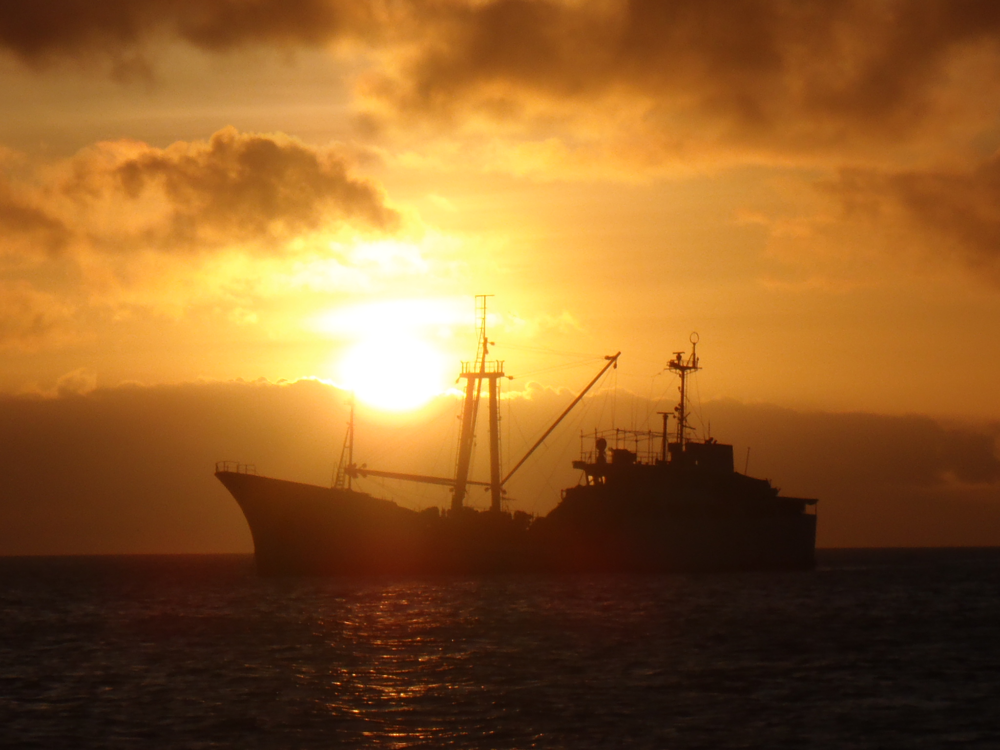
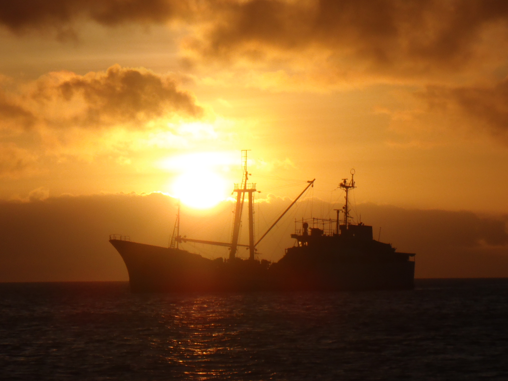

Friday, February 18th, 2011
 Kiribati is to be pronounced "Kiribass", and Kiritimati "Kirissmass". I don't know why, but that's it.
But "Kirissmass" sounds like "Christmas" to a western ear. Wherever there is a "ti", it should be replaced with "ss".
Kiribati is to be pronounced "Kiribass", and Kiritimati "Kirissmass". I don't know why, but that's it.
But "Kirissmass" sounds like "Christmas" to a western ear. Wherever there is a "ti", it should be replaced with "ss".
First surprise, the charts are about ¼ mile offset...
That makes us think a bit more about this idea of checking inside the lagoon... The pass is narrow, and the two charts we have do not agree on the depth. One says three feet where the other says three fathoms. They agree one one thing though, where it says "very dangerous" (in the Bay of Wrecks, on the eastern side of the island), or "constantly changing", in the entrance of the pass we were thinking of.
So you know what, we'll go ashore with the dinghy, and check how it looks like from the land.
Diving to check the anchor, I noticed it was just put on the hard (the reef) - no sand - and the chain was going around a couple of coral patches. That was what was holding the boat still.
Corine went ashore to see if the immigration office was open, and on the way, we checked some sand patches with the dinghy, nice places to drop the anchor in. We'll do that when she's back.
A little boy was picking up shells on the beach when she arrived. He gave her all the ones he had alreday collected. She gave him a little stuffed kangaroo in exchange...
Corine brought back some news:
- Immigration office, not before Monday..., maybe
- For the lagoon, do not go in. No water.
The funny thing is that none of the guides we have or we've read clearly mention that. Have the authors actually been there? Because that is pretty clear and easy to say: do not go in.
So, we re-anchored in a sand patch. With the sun above us, they're now easier to spot.
A local fisherman (Ta'are) came alongside, and presented us with three big flying fish.
The language they speak here sounds (completely) different from any other we've heard in Polynesia so far.
Sunday, February 20th, 2011
We went ashore in the afternoon. Waves were breaking on the beach we landed on last time, we used the pass. It's deep enough for the dinghy. The little 2.5 HP outboard engine did a good job, we were (I was) happy to have it. There is a little beach, where we landed, just behind the pass. Going ashore was upwind... We ran out of fuel on the way back, but that was downwind, we finished with the oars.
We need to remember to take dry clothes with us next time..., the pass is pretty bumpy, we were just soaked. The village looks nice, smiling faces all over the place.
And little piglets running in the village...
Monday, February 21st, 2011
 Custom & Administration day. Ashore again, for custom and immigration. We need a visa, it's AUD 40 per person. The custom guy was not here,
and he took the stamp with him; apparently there is only one on the island. We'll try again later.
Custom & Administration day. Ashore again, for custom and immigration. We need a visa, it's AUD 40 per person. The custom guy was not here,
and he took the stamp with him; apparently there is only one on the island. We'll try again later.
Most of the forms we filled out were blank sheets of paper... And just like anywhere else, I am not sure anyone is ever going to read them.
We came back in the afternoon, and we've cleared the customs (AUD 20), the quarantine (we got the deratisation certificate for AUD 50, and for that price, nobody needs to come on board to check for rats), and the immigration stamp on the passports (AUD 40 x 2)!
And also, we learnt that in Kiribati, today is Tuesday..., Tarawa (the capital) is on the other side of the date line. That explains why the bells of the church were ringing so loud on Saturday. We'll have to be careful to get the clearance, not to show up during a week-end!
We cannot figure how many people live on the island. We got different versions: 2000 people, 3000 people, and between 6 and 7000 people.
Tonight, a French navy boat is anchored close to us.
Tuesday, February 22nd, 2011
 We do some work on the boat in the morning, cleaning up, some work on the sails, and we go ashore on the afternoon.
There is an Internet cafe in London, yes! But today, the connection was down. We will try again tomorrow.
We do some work on the boat in the morning, cleaning up, some work on the sails, and we go ashore on the afternoon.
There is an Internet cafe in London, yes! But today, the connection was down. We will try again tomorrow.
We walked up to the wharf of the commercial terminal, north of our anchorage. All the kids were leaving school, they were laughing when seeing us, we must have some funny look, they were really having a good time looking at us.
Corine did an underwater movie.
Too bad we don't know how to prepare the sea urchins, there are hundreds of them under the boat...
Thursday, February 24th, 2011
- Phœnix Petrel - Te ruru
- Red Footed Booby - Te Koota
- Brown Noddy - Te Io
- White Tail Tropic Bird - Te Gnutu
- White Tern - Te Matawa
- Christmas Shearwater - Te Tinebu
We're progressing in our knowledge of the I'Kiribati. There is no 'L', no 'D', nor 'S' in the alphabet. The 'L' is replaced by a 'R', the 'D' by a 'T', and as we've seen before, the 'S' by 'Ti'.
As a result, London - the name of the village - is spelled Ronton.
The one who arranged our tour to the motu was named Rasta, written Ratita.
Sunday, February 27th, 2011
 
Our last day in Kiritimati. We go this morning to the custom and immigration to get the clearance.
We land on the beach we used the first time, it's much shorter. We managed to sneak between the breakers on the beach.
But this morning, the office is closed (here, today's Monday). We've also be told that we could get some supplies at
JMB, which is a warehouse close to Banana, a village about 20 kilometers far from where we are.

Our last day in Kiritimati. We go this morning to the custom and immigration to get the clearance.
We land on the beach we used the first time, it's much shorter. We managed to sneak between the breakers on the beach.
But this morning, the office is closed (here, today's Monday). We've also be told that we could get some supplies at
JMB, which is a warehouse close to Banana, a village about 20 kilometers far from where we are.
Let's try that.
That did not work either, the buses that stopped don't go to Banana... Ok, we'll try again this afternoon.
We're back at about 1:30pm, the custom office is open! We got the clearance, and we got the passports stamped by the immigration as well. Done! We're good to go.
And we cought a bus to go to JMB. These are small buses, 15 seats. But at some point, we were 23 people in the bus! And I'm pretty sure it was far from full... Funny. We got some beer at JMB (some "XXXX", from Queensland, Australia). That should be OK until our next stop, Hawaii.
The store is in fact a big warehouse - as predicted, and you do your shopping directly from the containers, as they've been unloaded from the ship.
Tonight, Ta'are gave us two last flying fish.